This is the full illustrated version of a teaching presentation prepared by Dr. Pawanpreet Singh (Orthopaedics, GMC Amritsar). Every slide is shown below with its text, so you can read it like an article — or download the original PowerPoint (.pptx) to teach from it. Topics covered include: ROADMAP; WHY IT MATTERS; APPLIED ANATOMY; Largest tarsal bone and the keystone of the lateral column;; PATHOANATOMY; ASSESSMENT; IMAGING.
Contents — jump to a slide (43)
- ORTHOPAEDICS · PG SEMINAR
- ROADMAP
- WHY IT MATTERS
- APPLIED ANATOMY
- Largest tarsal bone and the keystone of the lateral column;
- APPLIED ANATOMY
- APPLIED ANATOMY
- APPLIED ANATOMY
- PATHOANATOMY
- ASSESSMENT
- IMAGING
- IMAGING
- IMAGING
- IMAGING
- CLASSIFICATIONS
- CLASSIFICATIONS
- CLASSIFICATIONS
- CLASSIFICATIONS
- CLASSIFICATIONS
- CLASSIFICATIONS
- MANAGEMENT
- MANAGEMENT
- MANAGEMENT
- MANAGEMENT
- MANAGEMENT
- MANAGEMENT
- MANAGEMENT
- MANAGEMENT
- MANAGEMENT
- MANAGEMENT
- MANAGEMENT
- COMPLICATIONS
- COMPLICATIONS
- COMPLICATIONS
- COMPLICATIONS
- SPECIAL SITUATIONS
- SPECIAL SITUATIONS
- OUTCOME
- EVIDENCE
- EXAM PEARLS
- SUMMARY
- SOURCES
- Thanks
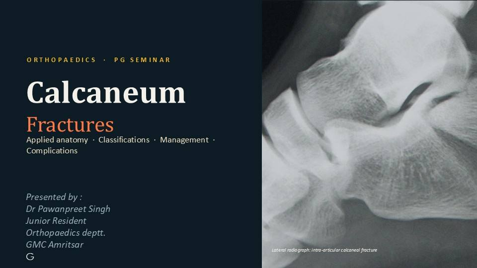
ORTHOPAEDICS · PG SEMINAR
- Calcaneum
- Fractures
- Applied anatomy · Classifications · Management · Complications
- Presented by :
- Dr Pawanpreet Singh
- Junior Resident
- Orthopaedics deptt.
- GMC Amritsar
- G
- Lateral radiograph: intra-articular calcaneal fracture
Presenter notes: Case image: J. Heilman MD, CC BY-SA 3.0 (Wikimedia Commons). Full credits on the last slide.
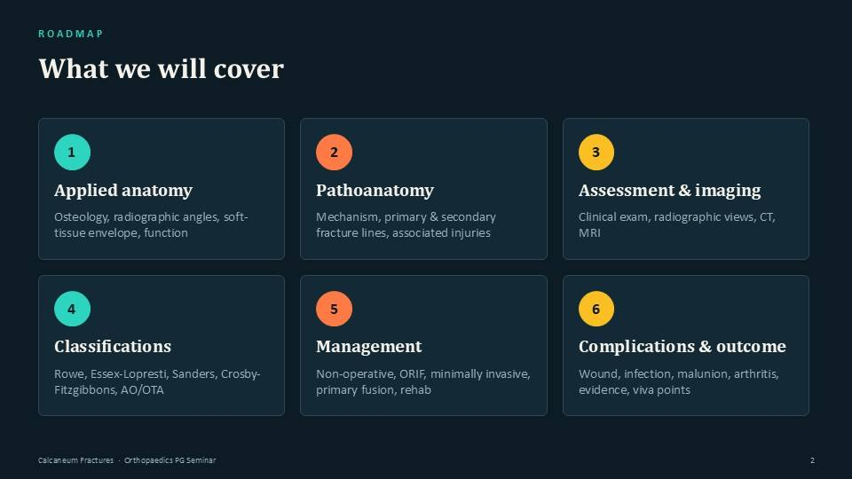
ROADMAP
- What we will cover
- Calcaneum Fractures · Orthopaedics PG Seminar
- 2
- 1
- Applied anatomy
- Osteology, radiographic angles, soft-tissue envelope, function
- 2
- Pathoanatomy
- Mechanism, primary & secondary fracture lines, associated injuries
- 3
- Assessment & imaging
- Clinical exam, radiographic views, CT, MRI
- 4
- Classifications
- Rowe, Essex-Lopresti, Sanders, Crosby-Fitzgibbons, AO/OTA
- 5
- Management
- Non-operative, ORIF, minimally invasive, primary fusion, rehab
- 6
- Complications & outcome
- Wound, infection, malunion, arthritis, evidence, viva points
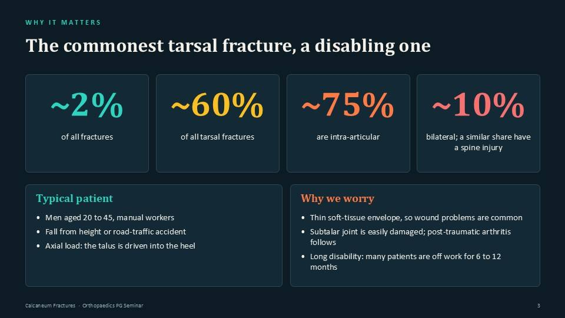
WHY IT MATTERS
- The commonest tarsal fracture, a disabling one
- Calcaneum Fractures · Orthopaedics PG Seminar
- 3
- ~2%
- of all fractures
- ~60%
- of all tarsal fractures
- ~75%
- are intra-articular
- ~10%
- bilateral; a similar share have a spine injury
- Typical patient
- Men aged 20 to 45, manual workers
- Fall from height or road-traffic accident
- Axial load: the talus is driven into the heel
- Why we worry
- Thin soft-tissue envelope, so wound problems are common
- Subtalar joint is easily damaged; post-traumatic arthritis follows
- Long disability: many patients are off work for 6 to 12 months
Presenter notes: Numbers are approximate and vary between series. The key message: a young, working-age, high-energy injury with a poor natural history when the subtalar joint is malreduced.
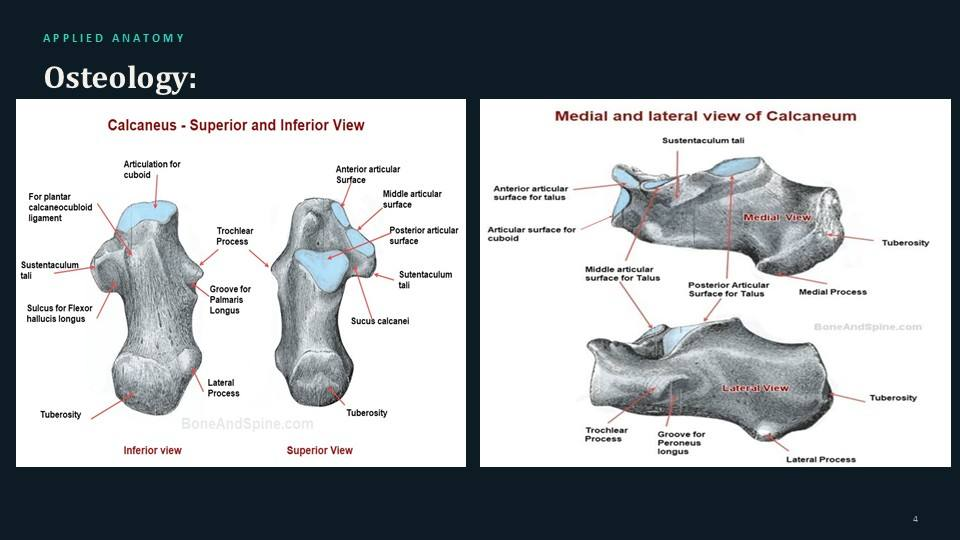
APPLIED ANATOMY
- Osteology:
- 4
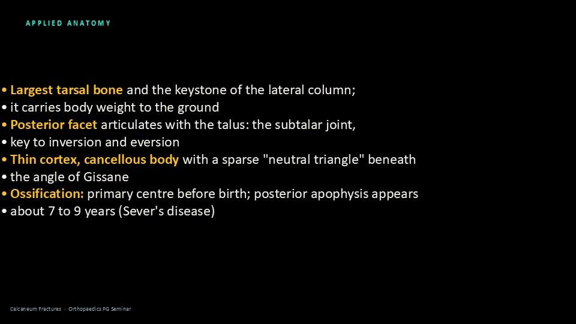
Largest tarsal bone and the keystone of the lateral column;
- APPLIED ANATOMY
- APPLIED ANATOMY
- Calcaneum Fractures · Orthopaedics PG Seminar
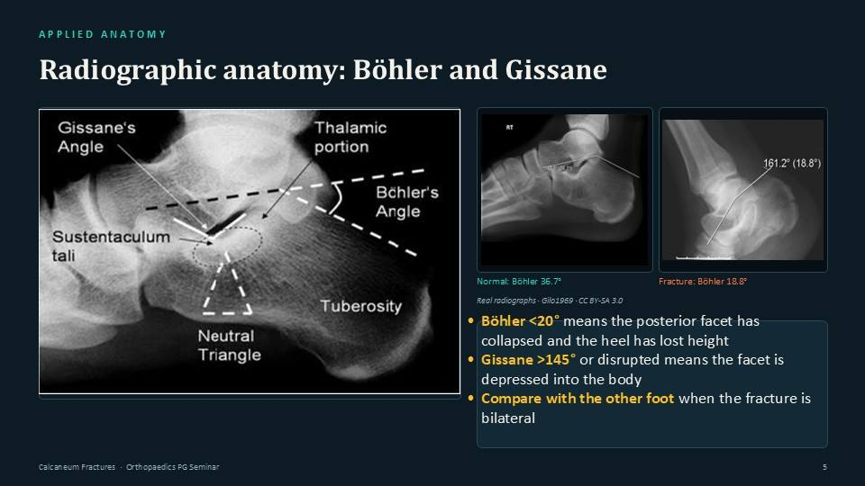
APPLIED ANATOMY
- Radiographic anatomy: Böhler and Gissane
- Calcaneum Fractures · Orthopaedics PG Seminar
- 5
- Normal: Böhler 36.7°
- Fracture: Böhler 18.8°
- Real radiographs · Gilo1969 · CC BY-SA 3.0
- Böhler <20° means the posterior facet has collapsed and the heel has lost height
- Gissane >145° or disrupted means the facet is depressed into the body
- Compare with the other foot when the fracture is bilateral
Presenter notes: Böhler: from the highest point of the anterior process to the highest point of the posterior facet, then on to the highest point of the posterior tuberosity. Normal 20 to 40 degrees. Gissane: the two cortical struts (lateral process of the talus sits in the notch) meeting at the sulcus.
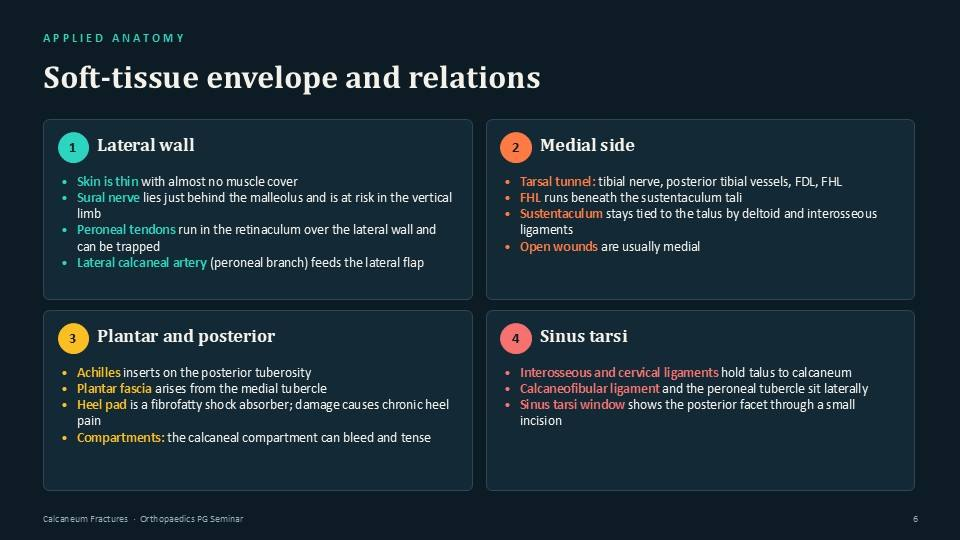
APPLIED ANATOMY
- Soft-tissue envelope and relations
- Calcaneum Fractures · Orthopaedics PG Seminar
- 6
- 1
- Lateral wall
- Skin is thin with almost no muscle cover
- Sural nerve lies just behind the malleolus and is at risk in the vertical limb
- Peroneal tendons run in the retinaculum over the lateral wall and can be trapped
- Lateral calcaneal artery (peroneal branch) feeds the lateral flap
- 2
- Medial side
- Tarsal tunnel: tibial nerve, posterior tibial vessels, FDL, FHL
- FHL runs beneath the sustentaculum tali
- Sustentaculum stays tied to the talus by deltoid and interosseous ligaments
- Open wounds are usually medial
- 3
- Plantar and posterior
- Achilles inserts on the posterior tuberosity
- Plantar fascia arises from the medial tubercle
- Heel pad is a fibrofatty shock absorber; damage causes chronic heel pain
- Compartments: the calcaneal compartment can bleed and tense
- 4
- Sinus tarsi
- Interosseous and cervical ligaments hold talus to calcaneum
- Calcaneofibular ligament and the peroneal tubercle sit laterally
- Sinus tarsi window shows the posterior facet through a small incision
Presenter notes: The lateral calcaneal artery (branch of the peroneal artery) supplies the lateral flap; the corner of the L incision is the most vulnerable point. Full-thickness flap, no-touch technique, K-wire retraction rather than forceps.
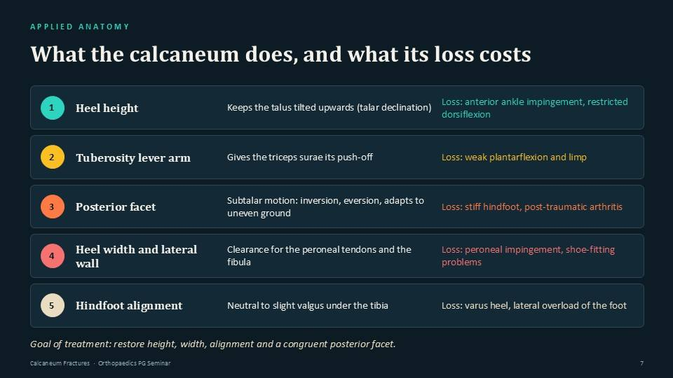
APPLIED ANATOMY
- What the calcaneum does, and what its loss costs
- Calcaneum Fractures · Orthopaedics PG Seminar
- 7
- 1
- Heel height
- Keeps the talus tilted upwards (talar declination)
- Loss: anterior ankle impingement, restricted dorsiflexion
- 2
- Tuberosity lever arm
- Gives the triceps surae its push-off
- Loss: weak plantarflexion and limp
- 3
- Posterior facet
- Subtalar motion: inversion, eversion, adapts to uneven ground
- Loss: stiff hindfoot, post-traumatic arthritis
- 4
- Heel width and lateral wall
- Clearance for the peroneal tendons and the fibula
- Loss: peroneal impingement, shoe-fitting problems
- 5
- Hindfoot alignment
- Neutral to slight valgus under the tibia
- Loss: varus heel, lateral overload of the foot
- Goal of treatment: restore height, width, alignment and a congruent posterior facet.
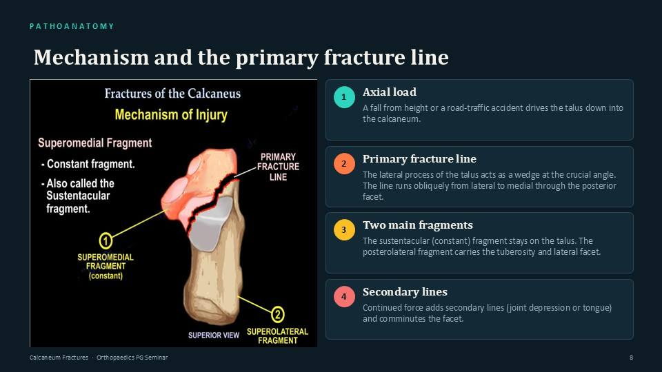
PATHOANATOMY
- Mechanism and the primary fracture line
- Calcaneum Fractures · Orthopaedics PG Seminar
- 8
- 1
- Axial load
- A fall from height or a road-traffic accident drives the talus down into the calcaneum.
- 2
- Primary fracture line
- The lateral process of the talus acts as a wedge at the crucial angle. The line runs obliquely from lateral to medial through the posterior facet.
- 3
- Two main fragments
- The sustentacular (constant) fragment stays on the talus. The posterolateral fragment carries the tuberosity and lateral facet.
- 4
- Secondary lines
- Continued force adds secondary lines (joint depression or tongue) and comminutes the facet.
Presenter notes: Superior view of a right calcaneum. The oblique primary fracture line is produced by the lateral process of the talus acting as a wedge at the crucial angle. The sustentacular fragment is the constant fragment.
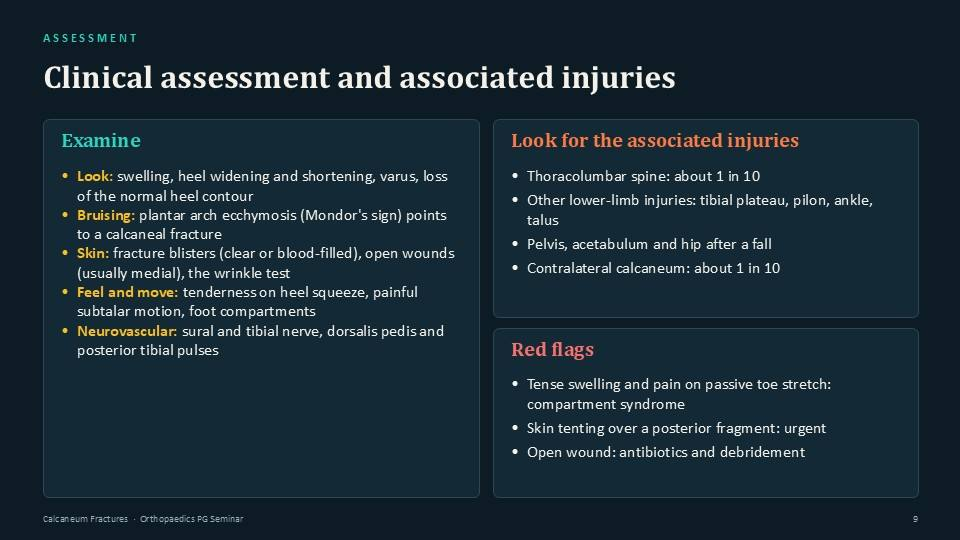
ASSESSMENT
- Clinical assessment and associated injuries
- Calcaneum Fractures · Orthopaedics PG Seminar
- 9
- Examine
- Look: swelling, heel widening and shortening, varus, loss of the normal heel contour
- Bruising: plantar arch ecchymosis (Mondor's sign) points to a calcaneal fracture
- Skin: fracture blisters (clear or blood-filled), open wounds (usually medial), the wrinkle test
- Feel and move: tenderness on heel squeeze, painful subtalar motion, foot compartments
- Neurovascular: sural and tibial nerve, dorsalis pedis and posterior tibial pulses
- Look for the associated injuries
- Thoracolumbar spine: about 1 in 10
- Other lower-limb injuries: tibial plateau, pilon, ankle, talus
- Pelvis, acetabulum and hip after a fall
- Contralateral calcaneum: about 1 in 10
- Red flags
- Tense swelling and pain on passive toe stretch: compartment syndrome
- Skin tenting over a posterior fragment: urgent
- Open wound: antibiotics and debridement
Presenter notes: Always treat the patient first: ATLS. A fall from height should prompt a full spine and pelvis survey.
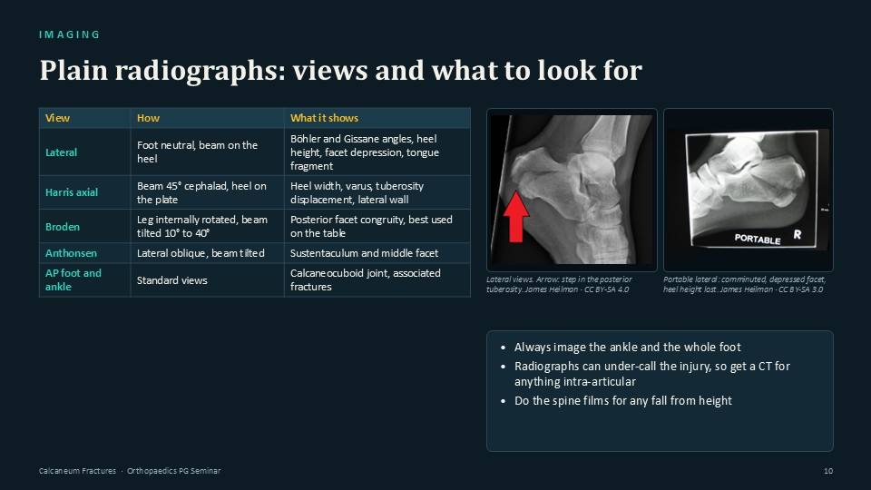
IMAGING
- Plain radiographs: views and what to look for
- Calcaneum Fractures · Orthopaedics PG Seminar
- 10
- Lateral views. Arrow: step in the posterior tuberosity. James Heilman · CC BY-SA 4.0
- Portable lateral: comminuted, depressed facet, heel height lost. James Heilman · CC BY-SA 3.0
- Always image the ankle and the whole foot
- Radiographs can under-call the injury, so get a CT for anything intra-articular
- Do the spine films for any fall from height
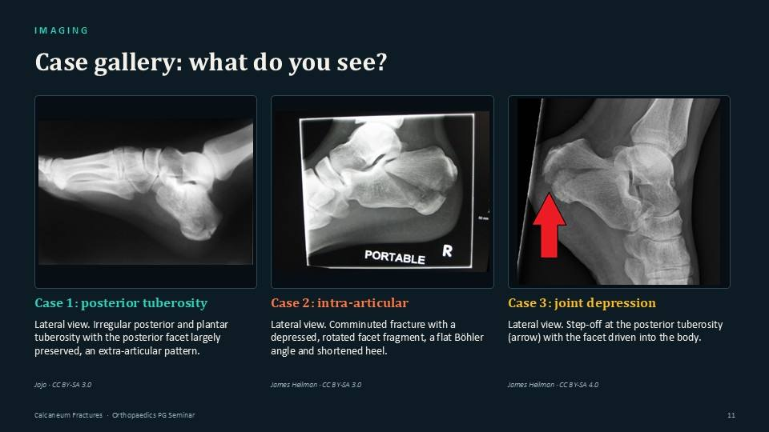
IMAGING
- Case gallery: what do you see?
- Calcaneum Fractures · Orthopaedics PG Seminar
- 11
- Case 1: posterior tuberosity
- Lateral view. Irregular posterior and plantar tuberosity with the posterior facet largely preserved, an extra-articular pattern.
- Jojo · CC BY-SA 3.0
- Case 2: intra-articular
- Lateral view. Comminuted fracture with a depressed, rotated facet fragment, a flat Böhler angle and shortened heel.
- James Heilman · CC BY-SA 3.0
- Case 3: joint depression
- Lateral view. Step-off at the posterior tuberosity (arrow) with the facet driven into the body.
- James Heilman · CC BY-SA 4.0
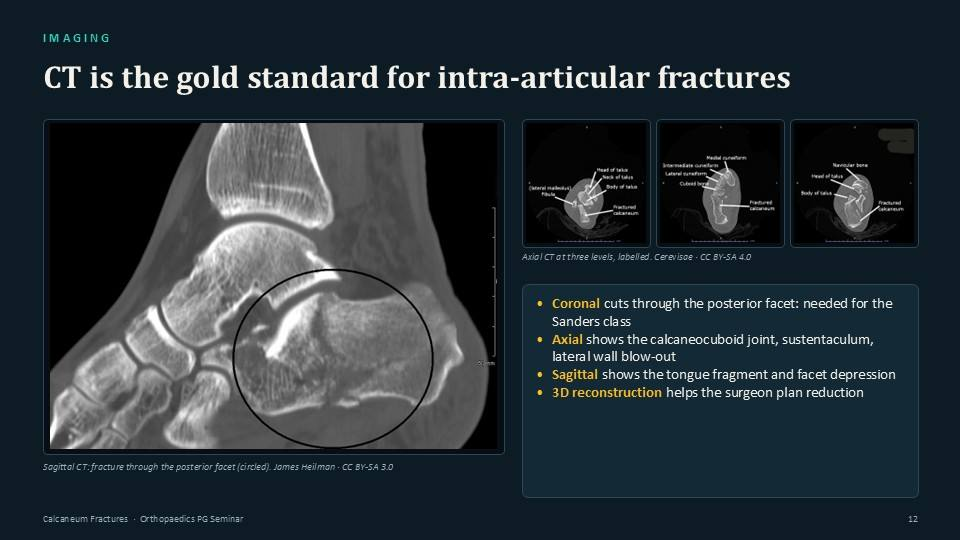
IMAGING
- CT is the gold standard for intra-articular fractures
- Calcaneum Fractures · Orthopaedics PG Seminar
- 12
- Sagittal CT: fracture through the posterior facet (circled). James Heilman · CC BY-SA 3.0
- Axial CT at three levels, labelled. Cerevisae · CC BY-SA 4.0
- Coronal cuts through the posterior facet: needed for the Sanders class
- Axial shows the calcaneocuboid joint, sustentaculum, lateral wall blow-out
- Sagittal shows the tongue fragment and facet depression
- 3D reconstruction helps the surgeon plan reduction
Presenter notes: CT: the sagittal reformat shows facet depression and tuberosity position; coronal (perpendicular to the posterior facet) is the one used for Sanders; axial shows the calcaneocuboid joint, sustentaculum and lateral wall.
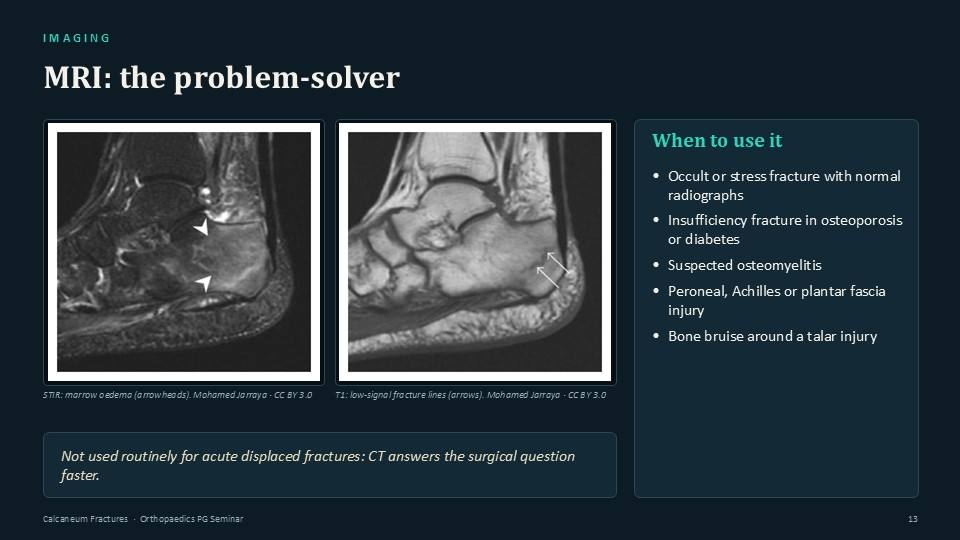
IMAGING
- MRI: the problem-solver
- Calcaneum Fractures · Orthopaedics PG Seminar
- 13
- STIR: marrow oedema (arrowheads). Mohamed Jarraya · CC BY 3.0
- T1: low-signal fracture lines (arrows). Mohamed Jarraya · CC BY 3.0
- When to use it
- Occult or stress fracture with normal radiographs
- Insufficiency fracture in osteoporosis or diabetes
- Suspected osteomyelitis
- Peroneal, Achilles or plantar fascia injury
- Bone bruise around a talar injury
- Not used routinely for acute displaced fractures: CT answers the surgical question faster.
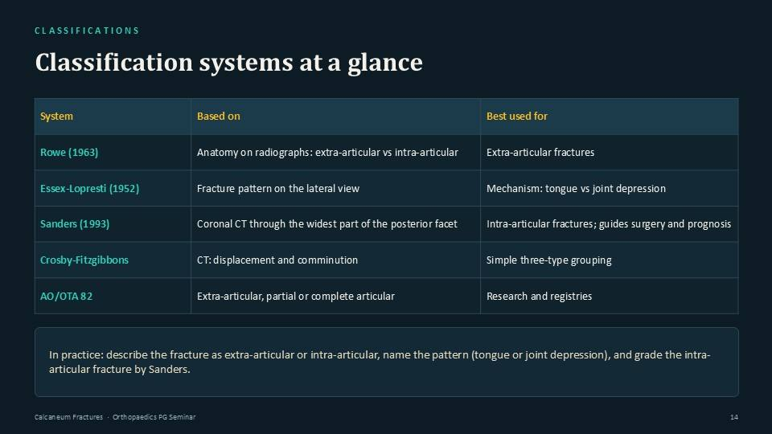
CLASSIFICATIONS
- Classification systems at a glance
- Calcaneum Fractures · Orthopaedics PG Seminar
- 14
- In practice: describe the fracture as extra-articular or intra-articular, name the pattern (tongue or joint depression), and grade the intra-articular fracture by Sanders.
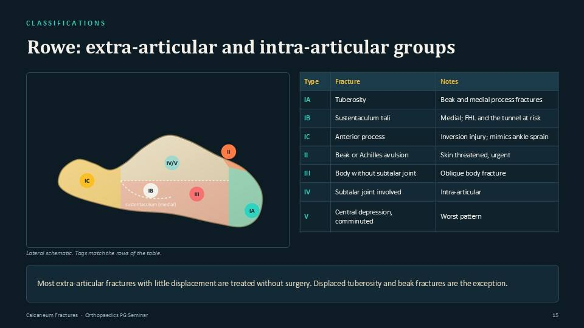
CLASSIFICATIONS
- Rowe: extra-articular and intra-articular groups
- Calcaneum Fractures · Orthopaedics PG Seminar
- 15
- Lateral schematic. Tags match the rows of the table.
- Most extra-articular fractures with little displacement are treated without surgery. Displaced tuberosity and beak fractures are the exception.
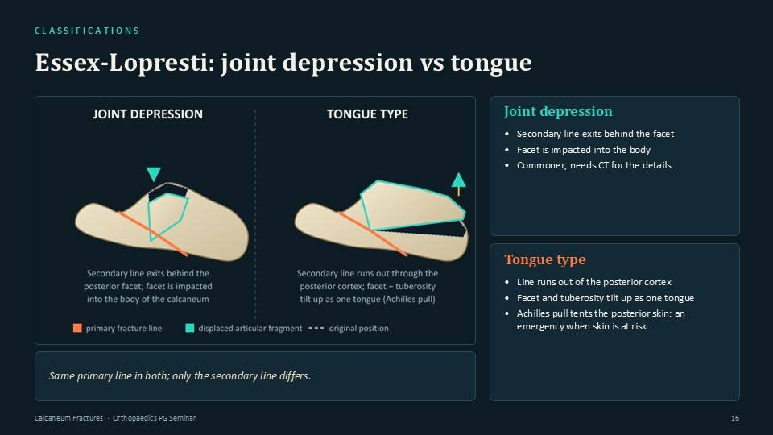
CLASSIFICATIONS
- Essex-Lopresti: joint depression vs tongue
- Calcaneum Fractures · Orthopaedics PG Seminar
- 16
- Joint depression
- Secondary line exits behind the facet
- Facet is impacted into the body
- Commoner; needs CT for the details
- Tongue type
- Line runs out of the posterior cortex
- Facet and tuberosity tilt up as one tongue
- Achilles pull tents the posterior skin: an emergency when skin is at risk
- Same primary line in both; only the secondary line differs.
Presenter notes: The secondary fracture line decides the pattern. Tongue-type: the line exits through the posterior cortex, so the facet and tuberosity move as one piece pulled upward by the Achilles. This tents the skin and is urgent.
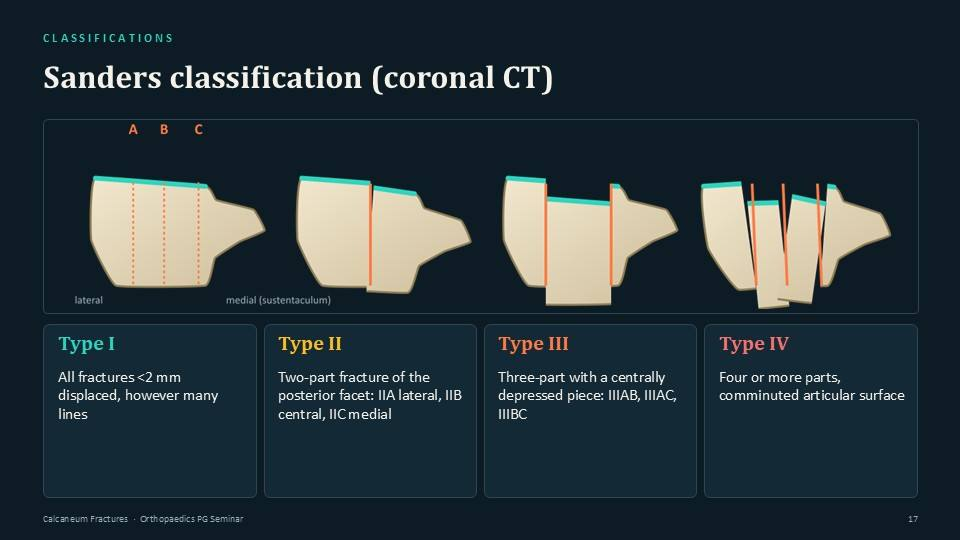
CLASSIFICATIONS
- Sanders classification (coronal CT)
- Calcaneum Fractures · Orthopaedics PG Seminar
- 17
- Type I
- All fractures <2 mm displaced, however many lines
- Type II
- Two-part fracture of the posterior facet: IIA lateral, IIB central, IIC medial
- Type III
- Three-part with a centrally depressed piece: IIIAB, IIIAC, IIIBC
- Type IV
- Four or more parts, comminuted articular surface
Presenter notes: Sanders: choose the coronal CT slice where the posterior facet is widest. Divide the facet into three columns A, B, C from lateral to medial. Count the articular pieces. Type II is IIA, IIB or IIC by the column of the fracture line. Type III has a centrally depressed piece: IIIAB, IIIAC, IIIBC. Type IV has four or more pieces.
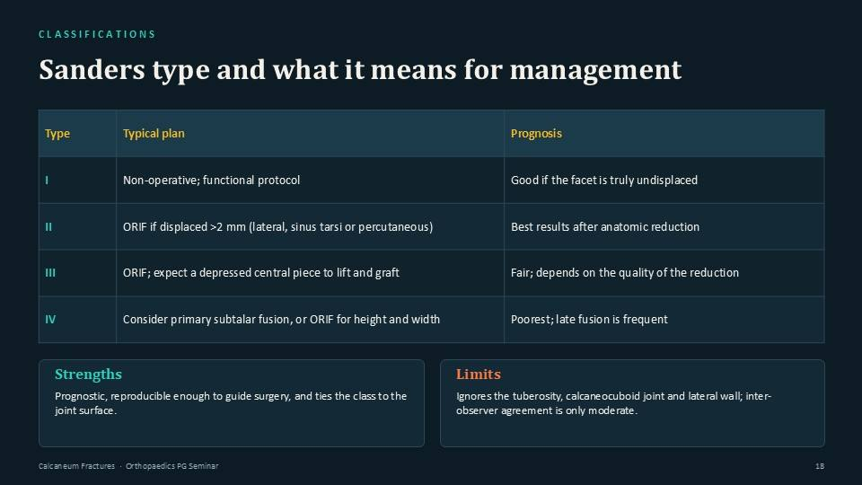
CLASSIFICATIONS
- Sanders type and what it means for management
- Calcaneum Fractures · Orthopaedics PG Seminar
- 18
- Strengths
- Prognostic, reproducible enough to guide surgery, and ties the class to the joint surface.
- Limits
- Ignores the tuberosity, calcaneocuboid joint and lateral wall; inter-observer agreement is only moderate.
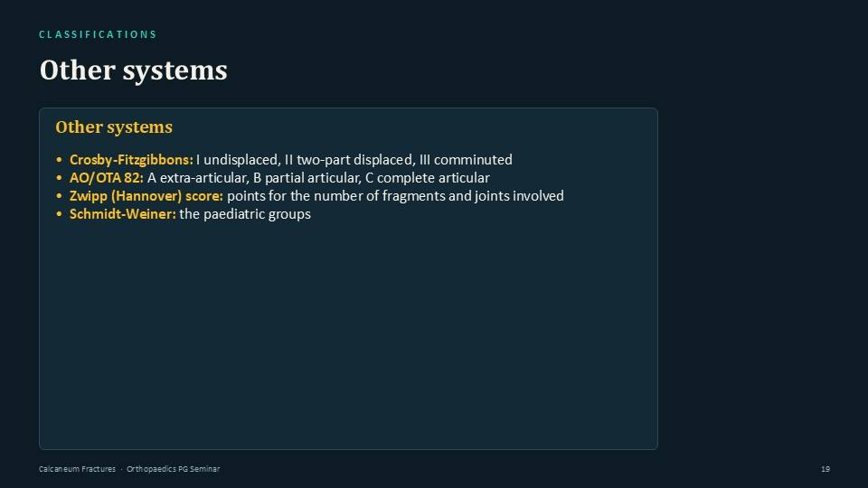
CLASSIFICATIONS
- Other systems
- Calcaneum Fractures · Orthopaedics PG Seminar
- 19
- Other systems
- Crosby-Fitzgibbons: I undisplaced, II two-part displaced, III comminuted
- AO/OTA 82: A extra-articular, B partial articular, C complete articular
- Zwipp (Hannover) score: points for the number of fragments and joints involved
- Schmidt-Weiner: the paediatric groups
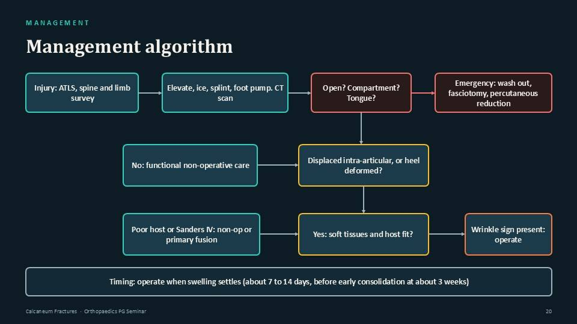
MANAGEMENT
- Management algorithm
- Calcaneum Fractures · Orthopaedics PG Seminar
- 20
- Injury: ATLS, spine and limb survey
- Elevate, ice, splint, foot pump. CT scan
- Open? Compartment? Tongue?
- Emergency: wash out, fasciotomy, percutaneous reduction
- Displaced intra-articular, or heel deformed?
- No: functional non-operative care
- Yes: soft tissues and host fit?
- Wrinkle sign present: operate
- Poor host or Sanders IV: non-op or primary fusion
- Timing: operate when swelling settles (about 7 to 14 days, before early consolidation at about 3 weeks)
Presenter notes: Follow the arrows: display, assess soft tissues and host, decide. Emergency branches are shown in red.
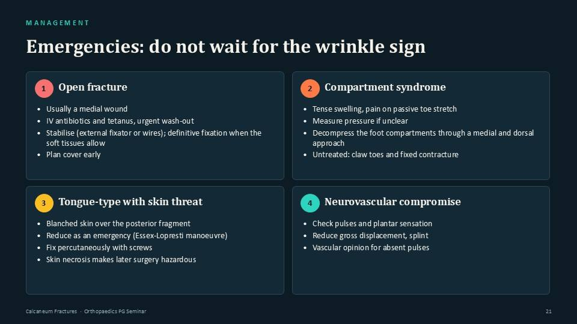
MANAGEMENT
- Emergencies: do not wait for the wrinkle sign
- Calcaneum Fractures · Orthopaedics PG Seminar
- 21
- 1
- Open fracture
- Usually a medial wound
- IV antibiotics and tetanus, urgent wash-out
- Stabilise (external fixator or wires); definitive fixation when the soft tissues allow
- Plan cover early
- 2
- Compartment syndrome
- Tense swelling, pain on passive toe stretch
- Measure pressure if unclear
- Decompress the foot compartments through a medial and dorsal approach
- Untreated: claw toes and fixed contracture
- 3
- Tongue-type with skin threat
- Blanched skin over the posterior fragment
- Reduce as an emergency (Essex-Lopresti manoeuvre)
- Fix percutaneously with screws
- Skin necrosis makes later surgery hazardous
- 4
- Neurovascular compromise
- Check pulses and plantar sensation
- Reduce gross displacement, splint
- Vascular opinion for absent pulses
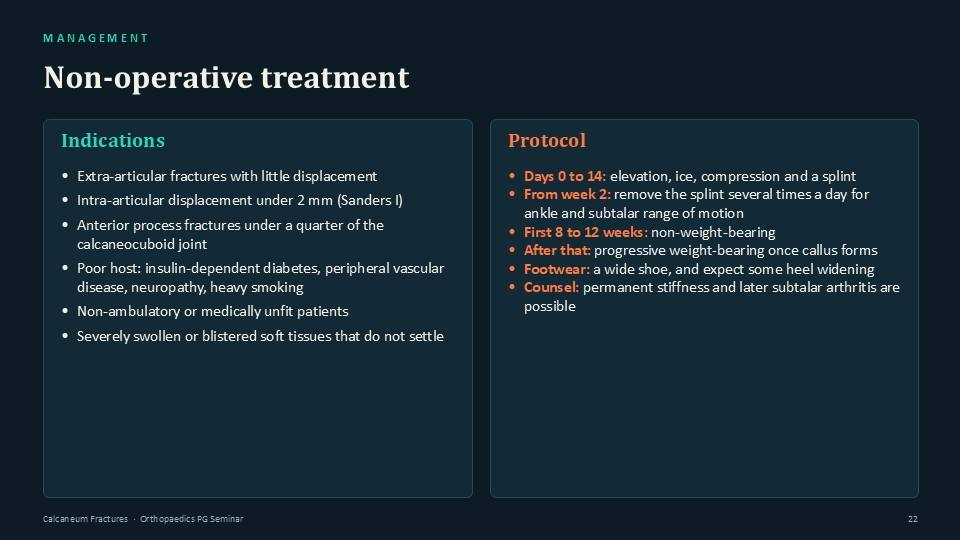
MANAGEMENT
- Non-operative treatment
- Calcaneum Fractures · Orthopaedics PG Seminar
- 22
- Indications
- Extra-articular fractures with little displacement
- Intra-articular displacement under 2 mm (Sanders I)
- Anterior process fractures under a quarter of the calcaneocuboid joint
- Poor host: insulin-dependent diabetes, peripheral vascular disease, neuropathy, heavy smoking
- Non-ambulatory or medically unfit patients
- Severely swollen or blistered soft tissues that do not settle
- Protocol
- Days 0 to 14: elevation, ice, compression and a splint
- From week 2: remove the splint several times a day for ankle and subtalar range of motion
- First 8 to 12 weeks: non-weight-bearing
- After that: progressive weight-bearing once callus forms
- Footwear: a wide shoe, and expect some heel widening
- Counsel: permanent stiffness and later subtalar arthritis are possible
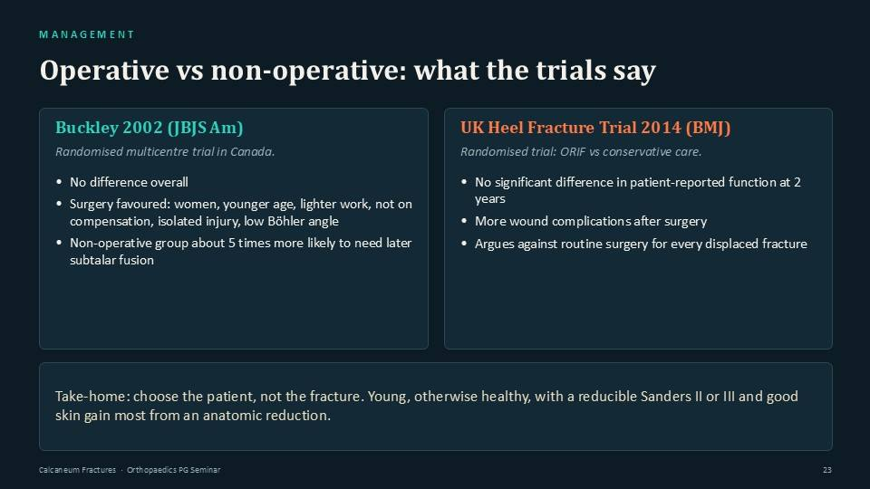
MANAGEMENT
- Operative vs non-operative: what the trials say
- Calcaneum Fractures · Orthopaedics PG Seminar
- 23
- Buckley 2002 (JBJS Am)
- Randomised multicentre trial in Canada.
- No difference overall
- Surgery favoured: women, younger age, lighter work, not on compensation, isolated injury, low Böhler angle
- Non-operative group about 5 times more likely to need later subtalar fusion
- UK Heel Fracture Trial 2014 (BMJ)
- Randomised trial: ORIF vs conservative care.
- No significant difference in patient-reported function at 2 years
- More wound complications after surgery
- Argues against routine surgery for every displaced fracture
- Take-home: choose the patient, not the fracture. Young, otherwise healthy, with a reducible Sanders II or III and good skin gain most from an anatomic reduction.
Presenter notes: Selection matters more than dogma. The Canadian trial showed subgroup benefit; the UK trial questioned routine surgery.
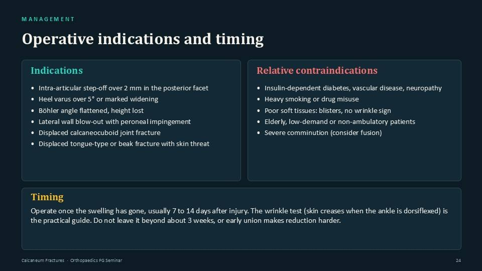
MANAGEMENT
- Operative indications and timing
- Calcaneum Fractures · Orthopaedics PG Seminar
- 24
- Indications
- Intra-articular step-off over 2 mm in the posterior facet
- Heel varus over 5° or marked widening
- Böhler angle flattened, height lost
- Lateral wall blow-out with peroneal impingement
- Displaced calcaneocuboid joint fracture
- Displaced tongue-type or beak fracture with skin threat
- Relative contraindications
- Insulin-dependent diabetes, vascular disease, neuropathy
- Heavy smoking or drug misuse
- Poor soft tissues: blisters, no wrinkle sign
- Elderly, low-demand or non-ambulatory patients
- Severe comminution (consider fusion)
- Timing
- Operate once the swelling has gone, usually 7 to 14 days after injury. The wrinkle test (skin creases when the ankle is dorsiflexed) is the practical guide. Do not leave it beyond about 3 weeks, or early union makes reduction harder.
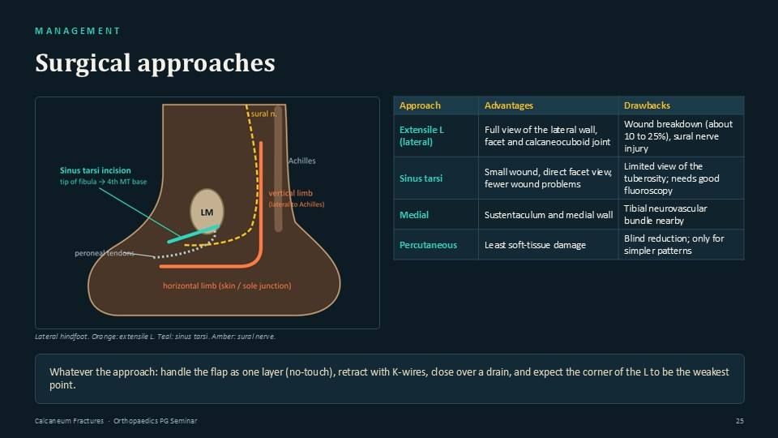
MANAGEMENT
- Surgical approaches
- Calcaneum Fractures · Orthopaedics PG Seminar
- 25
- Lateral hindfoot. Orange: extensile L. Teal: sinus tarsi. Amber: sural nerve.
- Whatever the approach: handle the flap as one layer (no-touch), retract with K-wires, close over a drain, and expect the corner of the L to be the weakest point.
Presenter notes: Extensile L: vertical limb midway between the fibula and Achilles, then along the skin/sole junction toward the fifth metatarsal base. Full-thickness flap, no-touch. Sinus tarsi: from the tip of the fibula toward the fourth metatarsal base.
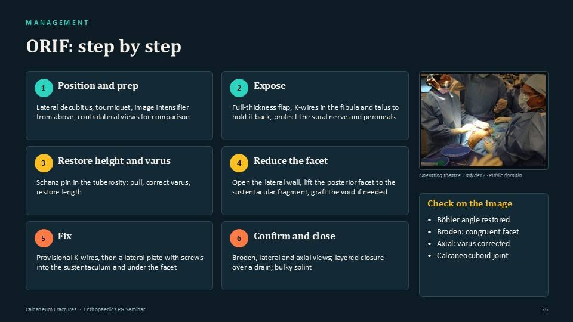
MANAGEMENT
- ORIF: step by step
- Calcaneum Fractures · Orthopaedics PG Seminar
- 26
- 1
- Position and prep
- Lateral decubitus, tourniquet, image intensifier from above, contralateral views for comparison
- 2
- Expose
- Full-thickness flap, K-wires in the fibula and talus to hold it back, protect the sural nerve and peroneals
- 3
- Restore height and varus
- Schanz pin in the tuberosity: pull, correct varus, restore length
- 4
- Reduce the facet
- Open the lateral wall, lift the posterior facet to the sustentacular fragment, graft the void if needed
- 5
- Fix
- Provisional K-wires, then a lateral plate with screws into the sustentaculum and under the facet
- 6
- Confirm and close
- Broden, lateral and axial views; layered closure over a drain; bulky splint
- Operating theatre. Ladyde12 · Public domain
- Check on the image
- Böhler angle restored
- Broden: congruent facet
- Axial: varus corrected
- Calcaneocuboid joint
Presenter notes: Steps: position, exposure, height and varus first (Schanz pin), then the facet, then fix. Confirm with Broden, lateral and axial images before closing.
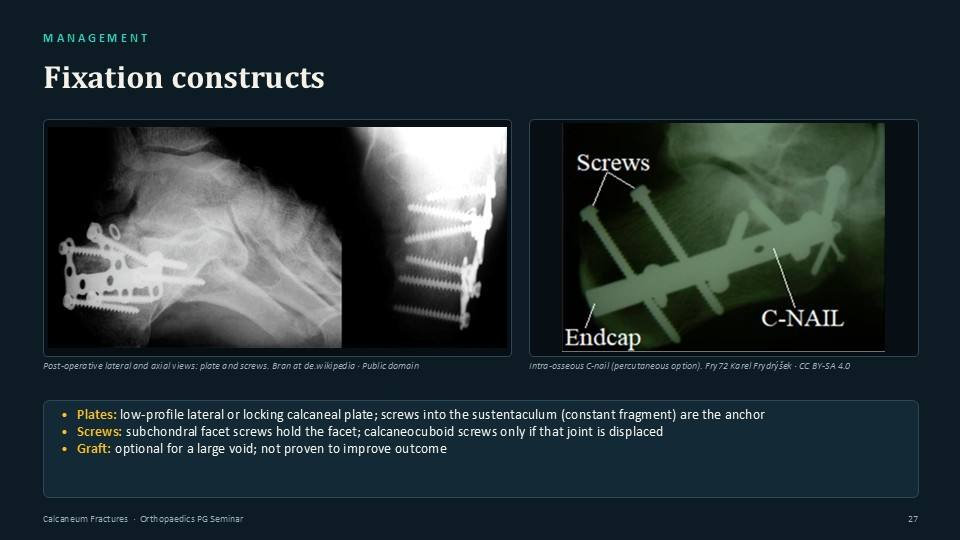
MANAGEMENT
- Fixation constructs
- Calcaneum Fractures · Orthopaedics PG Seminar
- 27
- Post-operative lateral and axial views: plate and screws. Bran at de.wikipedia · Public domain
- Intra-osseous C-nail (percutaneous option). Fry72 Karel Frydrýšek · CC BY-SA 4.0
- Plates: low-profile lateral or locking calcaneal plate; screws into the sustentaculum (constant fragment) are the anchor
- Screws: subchondral facet screws hold the facet; calcaneocuboid screws only if that joint is displaced
- Graft: optional for a large void; not proven to improve outcome
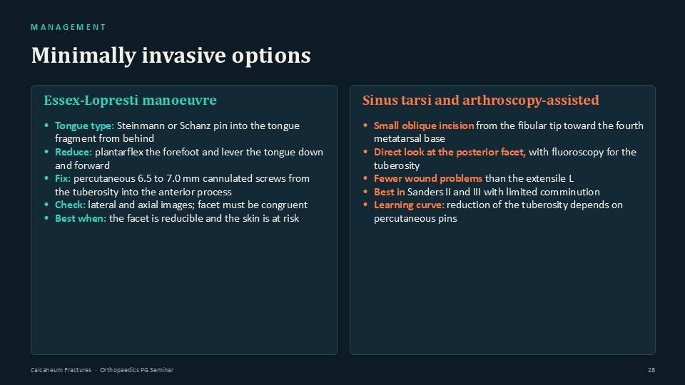
MANAGEMENT
- Minimally invasive options
- Calcaneum Fractures · Orthopaedics PG Seminar
- 28
- Essex-Lopresti manoeuvre
- Tongue type: Steinmann or Schanz pin into the tongue fragment from behind
- Reduce: plantarflex the forefoot and lever the tongue down and forward
- Fix: percutaneous 6.5 to 7.0 mm cannulated screws from the tuberosity into the anterior process
- Check: lateral and axial images; facet must be congruent
- Best when: the facet is reducible and the skin is at risk
- Sinus tarsi and arthroscopy-assisted
- Small oblique incision from the fibular tip toward the fourth metatarsal base
- Direct look at the posterior facet, with fluoroscopy for the tuberosity
- Fewer wound problems than the extensile L
- Best in Sanders II and III with limited comminution
- Learning curve: reduction of the tuberosity depends on percutaneous pins
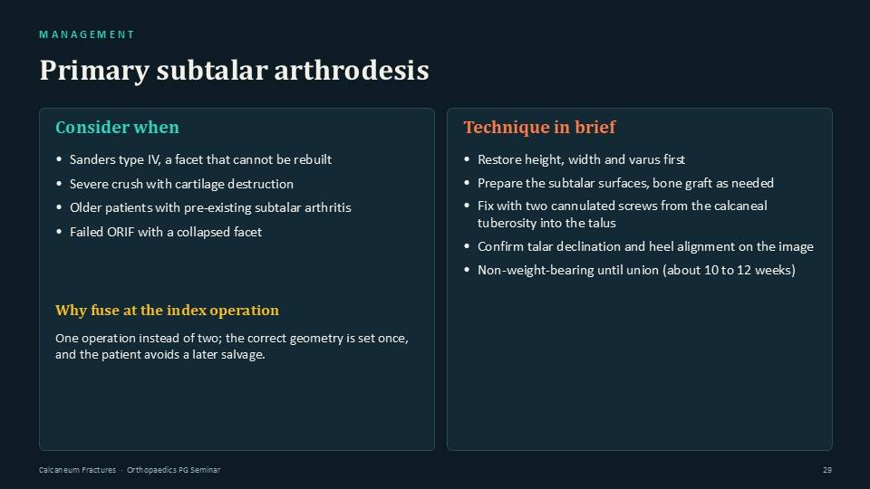
MANAGEMENT
- Primary subtalar arthrodesis
- Calcaneum Fractures · Orthopaedics PG Seminar
- 29
- Consider when
- Sanders type IV, a facet that cannot be rebuilt
- Severe crush with cartilage destruction
- Older patients with pre-existing subtalar arthritis
- Failed ORIF with a collapsed facet
- Why fuse at the index operation
- One operation instead of two; the correct geometry is set once, and the patient avoids a later salvage.
- Technique in brief
- Restore height, width and varus first
- Prepare the subtalar surfaces, bone graft as needed
- Fix with two cannulated screws from the calcaneal tuberosity into the talus
- Confirm talar declination and heel alignment on the image
- Non-weight-bearing until union (about 10 to 12 weeks)
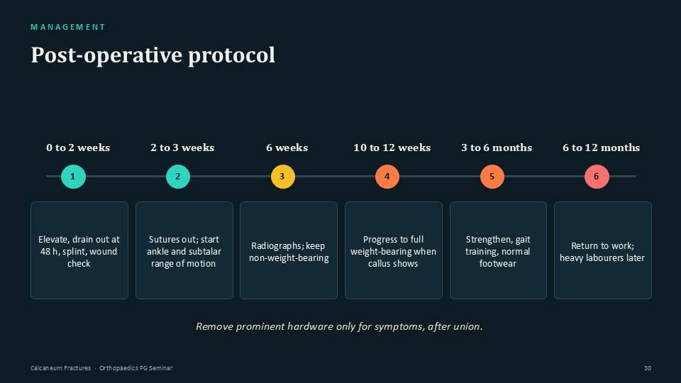
MANAGEMENT
- Post-operative protocol
- Calcaneum Fractures · Orthopaedics PG Seminar
- 30
- 1
- 0 to 2 weeks
- Elevate, drain out at 48 h, splint, wound check
- 2
- 2 to 3 weeks
- Sutures out; start ankle and subtalar range of motion
- 3
- 6 weeks
- Radiographs; keep non-weight-bearing
- 4
- 10 to 12 weeks
- Progress to full weight-bearing when callus shows
- 5
- 3 to 6 months
- Strengthen, gait training, normal footwear
- 6
- 6 to 12 months
- Return to work; heavy labourers later
- Remove prominent hardware only for symptoms, after union.
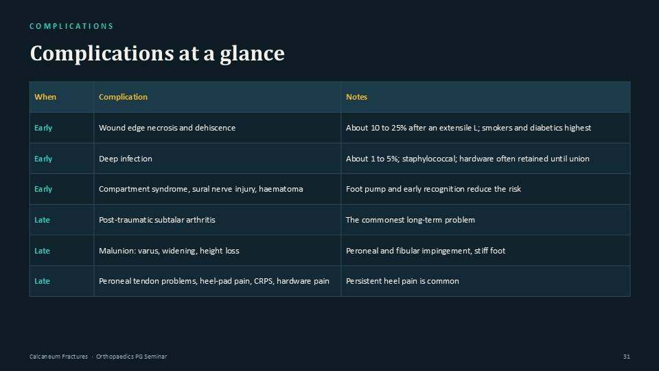
COMPLICATIONS
- Complications at a glance
- Calcaneum Fractures · Orthopaedics PG Seminar
- 31
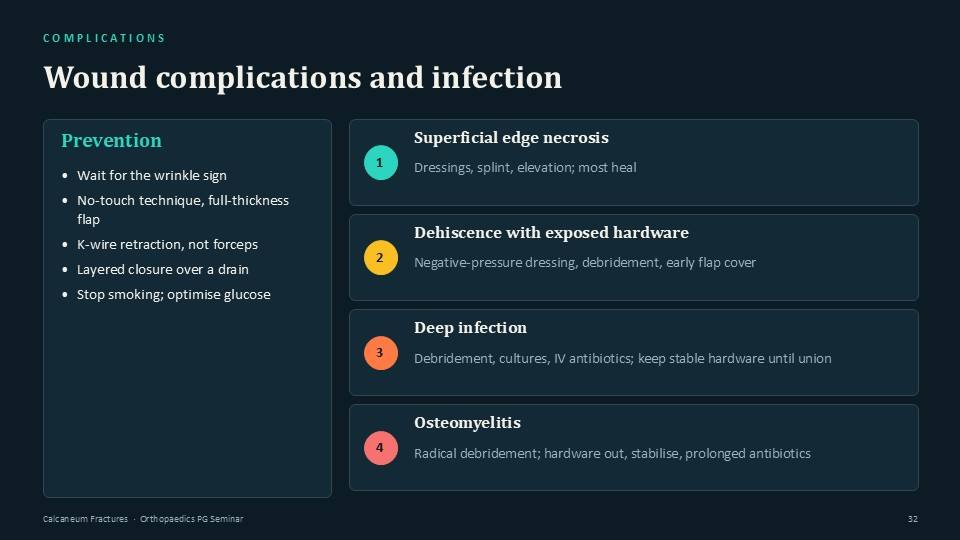
COMPLICATIONS
- Wound complications and infection
- Calcaneum Fractures · Orthopaedics PG Seminar
- 32
- Prevention
- Wait for the wrinkle sign
- No-touch technique, full-thickness flap
- K-wire retraction, not forceps
- Layered closure over a drain
- Stop smoking; optimise glucose
- 1
- Superficial edge necrosis
- Dressings, splint, elevation; most heal
- 2
- Dehiscence with exposed hardware
- Negative-pressure dressing, debridement, early flap cover
- 3
- Deep infection
- Debridement, cultures, IV antibiotics; keep stable hardware until union
- 4
- Osteomyelitis
- Radical debridement; hardware out, stabilise, prolonged antibiotics
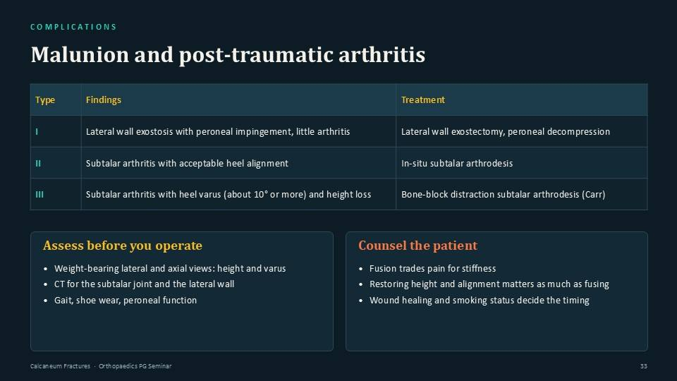
COMPLICATIONS
- Malunion and post-traumatic arthritis
- Calcaneum Fractures · Orthopaedics PG Seminar
- 33
- Assess before you operate
- Weight-bearing lateral and axial views: height and varus
- CT for the subtalar joint and the lateral wall
- Gait, shoe wear, peroneal function
- Counsel the patient
- Fusion trades pain for stiffness
- Restoring height and alignment matters as much as fusing
- Wound healing and smoking status decide the timing
Presenter notes: Stephens-Sanders classification of calcaneal malunion. Match the operation to the lesion: exostectomy, in-situ fusion, or bone-block distraction fusion.
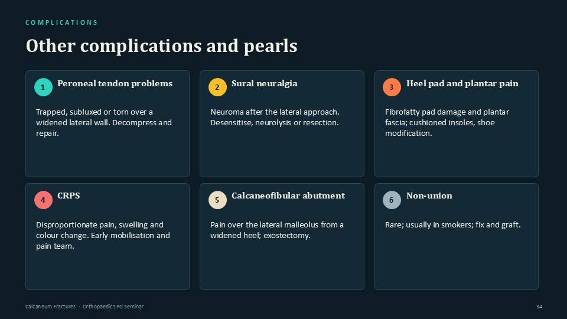
COMPLICATIONS
- Other complications and pearls
- Calcaneum Fractures · Orthopaedics PG Seminar
- 34
- 1
- Peroneal tendon problems
- Trapped, subluxed or torn over a widened lateral wall. Decompress and repair.
- 2
- Sural neuralgia
- Neuroma after the lateral approach. Desensitise, neurolysis or resection.
- 3
- Heel pad and plantar pain
- Fibrofatty pad damage and plantar fascia; cushioned insoles, shoe modification.
- 4
- CRPS
- Disproportionate pain, swelling and colour change. Early mobilisation and pain team.
- 5
- Calcaneofibular abutment
- Pain over the lateral malleolus from a widened heel; exostectomy.
- 6
- Non-union
- Rare; usually in smokers; fix and graft.
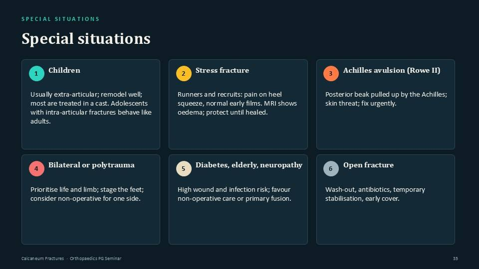
SPECIAL SITUATIONS
- Special situations
- Calcaneum Fractures · Orthopaedics PG Seminar
- 35
- 1
- Children
- Usually extra-articular; remodel well; most are treated in a cast. Adolescents with intra-articular fractures behave like adults.
- 2
- Stress fracture
- Runners and recruits: pain on heel squeeze, normal early films. MRI shows oedema; protect until healed.
- 3
- Achilles avulsion (Rowe II)
- Posterior beak pulled up by the Achilles; skin threat; fix urgently.
- 4
- Bilateral or polytrauma
- Prioritise life and limb; stage the feet; consider non-operative for one side.
- 5
- Diabetes, elderly, neuropathy
- High wound and infection risk; favour non-operative care or primary fusion.
- 6
- Open fracture
- Wash-out, antibiotics, temporary stabilisation, early cover.
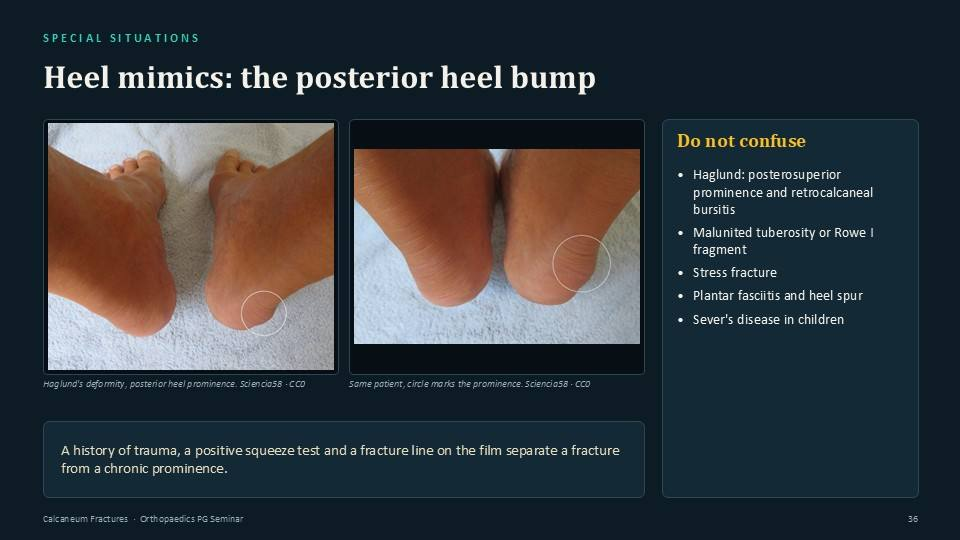
SPECIAL SITUATIONS
- Heel mimics: the posterior heel bump
- Calcaneum Fractures · Orthopaedics PG Seminar
- 36
- Haglund's deformity, posterior heel prominence. Sciencia58 · CC0
- Same patient, circle marks the prominence. Sciencia58 · CC0
- Do not confuse
- Haglund: posterosuperior prominence and retrocalcaneal bursitis
- Malunited tuberosity or Rowe I fragment
- Stress fracture
- Plantar fasciitis and heel spur
- Sever's disease in children
- A history of trauma, a positive squeeze test and a fracture line on the film separate a fracture from a chronic prominence.
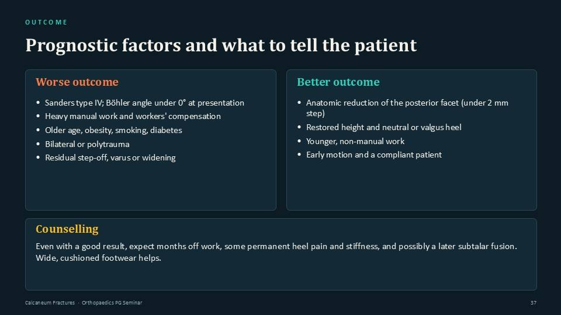
OUTCOME
- Prognostic factors and what to tell the patient
- Calcaneum Fractures · Orthopaedics PG Seminar
- 37
- Worse outcome
- Sanders type IV; Böhler angle under 0° at presentation
- Heavy manual work and workers' compensation
- Older age, obesity, smoking, diabetes
- Bilateral or polytrauma
- Residual step-off, varus or widening
- Better outcome
- Anatomic reduction of the posterior facet (under 2 mm step)
- Restored height and neutral or valgus heel
- Younger, non-manual work
- Early motion and a compliant patient
- Counselling
- Even with a good result, expect months off work, some permanent heel pain and stiffness, and possibly a later subtalar fusion. Wide, cushioned footwear helps.
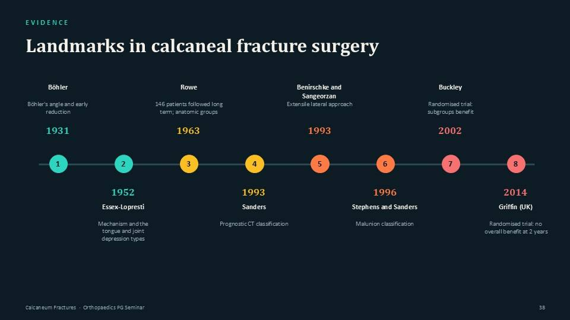
EVIDENCE
- Landmarks in calcaneal fracture surgery
- Calcaneum Fractures · Orthopaedics PG Seminar
- 38
- 1
- 1931
- Böhler
- Böhler's angle and early reduction
- 2
- 1952
- Essex-Lopresti
- Mechanism and the tongue and joint depression types
- 3
- 1963
- Rowe
- 146 patients followed long term; anatomic groups
- 4
- 1993
- Sanders
- Prognostic CT classification
- 5
- 1993
- Benirschke and Sangeorzan
- Extensile lateral approach
- 6
- 1996
- Stephens and Sanders
- Malunion classification
- 7
- 2002
- Buckley
- Randomised trial: subgroups benefit
- 8
- 2014
- Griffin (UK)
- Randomised trial: no overall benefit at 2 years
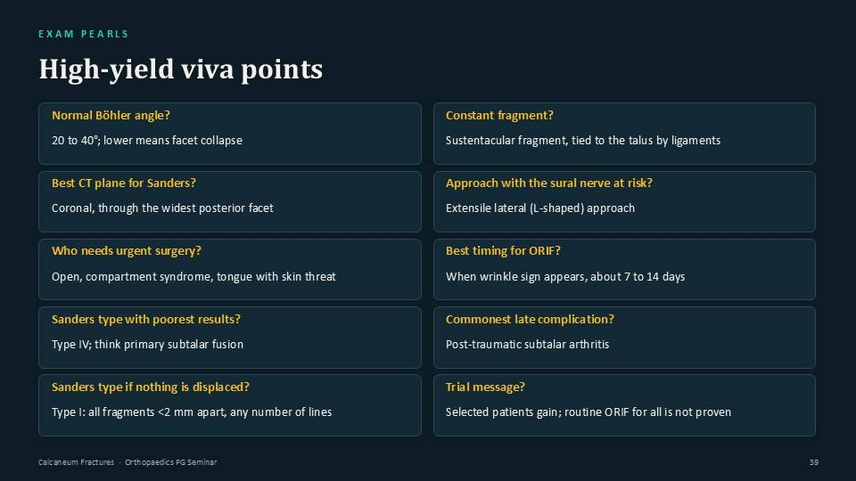
EXAM PEARLS
- High-yield viva points
- Calcaneum Fractures · Orthopaedics PG Seminar
- 39
- Normal Böhler angle?
- 20 to 40°; lower means facet collapse
- Constant fragment?
- Sustentacular fragment, tied to the talus by ligaments
- Best CT plane for Sanders?
- Coronal, through the widest posterior facet
- Approach with the sural nerve at risk?
- Extensile lateral (L-shaped) approach
- Who needs urgent surgery?
- Open, compartment syndrome, tongue with skin threat
- Best timing for ORIF?
- When wrinkle sign appears, about 7 to 14 days
- Sanders type with poorest results?
- Type IV; think primary subtalar fusion
- Commonest late complication?
- Post-traumatic subtalar arthritis
- Sanders type if nothing is displaced?
- Type I: all fragments <2 mm apart, any number of lines
- Trial message?
- Selected patients gain; routine ORIF for all is not proven
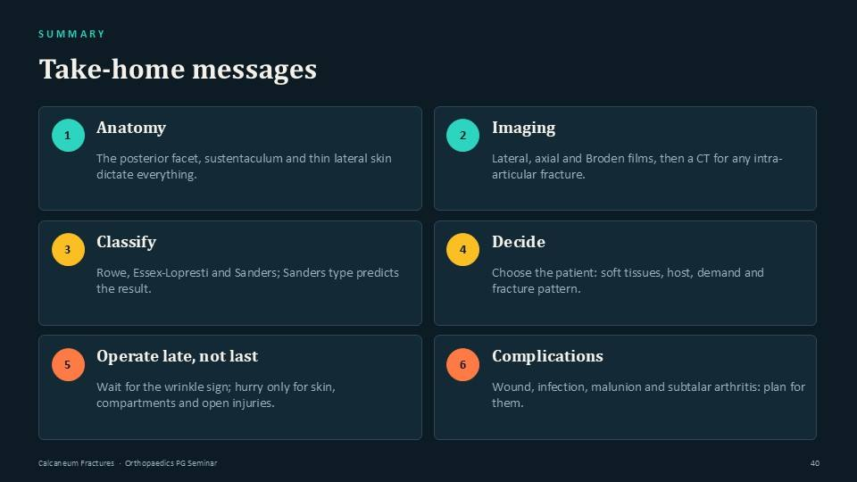
SUMMARY
- Take-home messages
- Calcaneum Fractures · Orthopaedics PG Seminar
- 40
- 1
- Anatomy
- The posterior facet, sustentaculum and thin lateral skin dictate everything.
- 2
- Imaging
- Lateral, axial and Broden films, then a CT for any intra-articular fracture.
- 3
- Classify
- Rowe, Essex-Lopresti and Sanders; Sanders type predicts the result.
- 4
- Decide
- Choose the patient: soft tissues, host, demand and fracture pattern.
- 5
- Operate late, not last
- Wait for the wrinkle sign; hurry only for skin, compartments and open injuries.
- 6
- Complications
- Wound, infection, malunion and subtalar arthritis: plan for them.
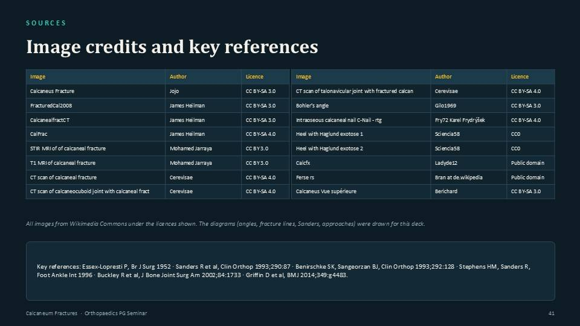
SOURCES
- Image credits and key references
- Calcaneum Fractures · Orthopaedics PG Seminar
- 41
- All images from Wikimedia Commons under the licences shown. The diagrams (angles, fracture lines, Sanders, approaches) were drawn for this deck.
- Key references: Essex-Lopresti P, Br J Surg 1952 · Sanders R et al, Clin Orthop 1993;290:87 · Benirschke SK, Sangeorzan BJ, Clin Orthop 1993;292:128 · Stephens HM, Sanders R, Foot Ankle Int 1996 · Buckley R et al, J Bone Joint Surg Am 2002;84:1733 · Griffin D et al, BMJ 2014;349:g4483.
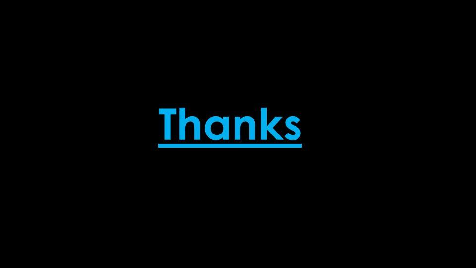
Thanks
Use this deck in your teaching
The original editable PowerPoint is free to download for non-commercial teaching, with credit to the author. Questions or corrections? Contact us.
About this deck
Prepared by Dr. Pawanpreet Singh (Orthopaedics, GMC Amritsar) for postgraduate and clinical teaching, and published on OrthoChronicles, whose clinical library is curated under the guidance of Dr. Maninder Singh (MS Orthopaedics, GMCH Amritsar). Where images are from open-licence sources (for example Wikimedia Commons), the licence and author appear on the slide. See our editorial policy. Educational use only — not medical advice; see Terms & Medical Disclaimer.